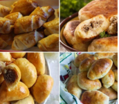

Grandma Lukenoff's Piroshki


by Anna-Lena

A traditional Russian stuffed bun or pastry, using yeast dough that is filled with ground meet, eggs and seasonings, baked or pan fry. Grandman and I prefer frying on stove top. (12 servings).